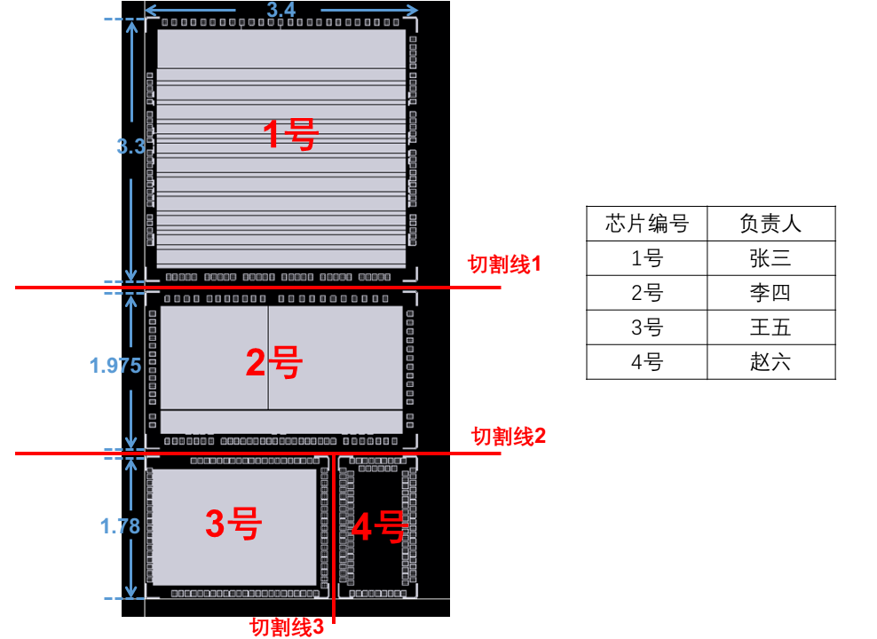
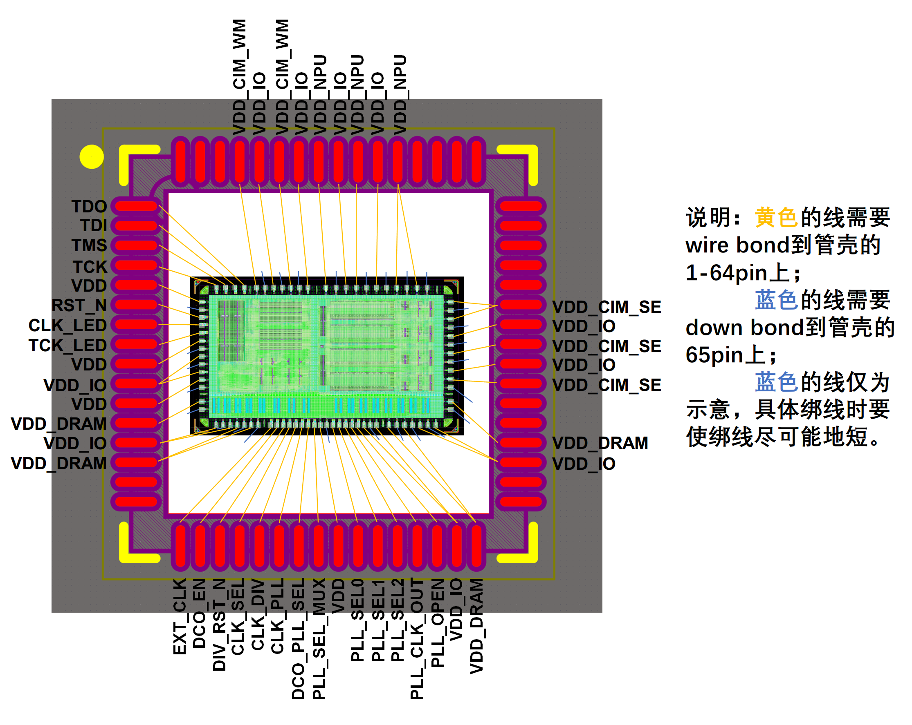

9. 划片与封装
9.1 划片
芯片分割（Die singulation），也称为晶圆切割（wafer dicing）。 在这个过程中，一个大的硅晶圆被切割成许多小的，独立的半导体芯片或集成电路。 每个小芯片都包含了一个完整的电路。 划片过程的主要目的是将硅晶圆上的多个集成电路分离开来，以便于后续的封装和测试。
扩展：划片机
划片通常是通过一个高精度的划片机完成的，这个机器可以根据预设的模式和尺寸切割硅晶圆。划片机使用一种高速旋转的刀片（通常是金刚石或其他硬质材料）在硅晶圆上进行切割。这个过程需要非常精确，以确保每个芯片都被正确地切割，而不会损坏芯片上的电路。
划片需要提供的资料如下：
- 划片数量
- 划片示意图

9.2 封装
芯片封装（Integrated circuit packaging，chip packaging）发生在硅晶圆划片之后。封装的主要目的是保护微小、脆弱的半导体芯片，同时提供交互接口，使芯片可以和电子设备的其他部分进行电气连接。
以下是芯片封装过程的基本步骤：
-
芯片装载（Die Attachment）：切割后的芯片（也称为“die”）被安装到封装的载体（通常是金属或塑料）上。这个过程通常使用导热材料（例如银胶或锡膏）来确保良好的热接触，帮助散热。
-
线引封装（Wire Bonding）：芯片上的电路通过极细的金属线（通常是金或铝）连接到封装的引脚上。这些金属线非常细小，通常需要使用高精度的自动设备来进行操作。
-
封装封闭（Encapsulation）：芯片和金属线被一个保护层覆盖，通常是塑料或陶瓷。这个保护层可以防止芯片受到物理损伤，同时也防止环境因素（如湿气、灰尘、化学物质等）对芯片造成损害。
完成封装后的芯片可以被焊接到电路板上，与电子设备的其他部分进行电气连接。
芯片封装有很多种类型，我们使用的封装类型为QFN（Quad Flat No-leads）封装。 QFN（Quad Flat No-leads）封装是一种四面平无引脚封装。 它的特点是四个边都是平的，没有传统意义上的引脚，而是采用周边的pad（电接触垫）来实现电路的连接。 QFN封装体积小、高度低，因此对于需要小型化的电子设备来说，非常适合。

QFN后面的数字（如QFN64、QFN88 10*10）通常指的是封装上的pad的数量。 例如，QFN64的封装就有64个pad，而QFN88的封装则有88个pad。"10*10"则通常指的是封装的物理尺寸，单位通常是毫米(mm)。
我们需要将芯片的IO与QFN封装的pad进行对应，以便在封装过程中正确连接芯片的电路。

扩展：COB
COB，全称Chip On Board，即直接将芯片安装在电路板上的封装技术。这种技术中，裸芯片被放置在电路板上，然后通过金线或铜线进行键合，与电路板上的其他组件进行电气连接。然后，芯片和键合线会被一种特殊的环氧树脂（通常被称为"黑胶"）覆盖，以保护它们免受物理损伤和环境影响。相比QFN，COB技术的寄生电阻电容更小，因此适合性能、功耗敏感的芯片。
Under development!